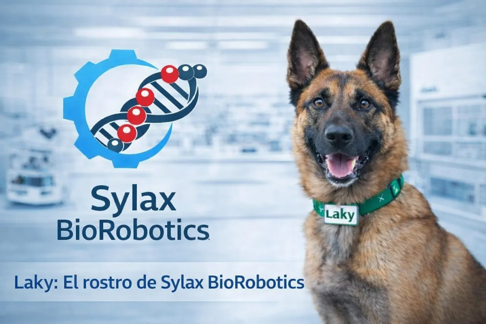

Sala de Cultivo Celular
Ambiente de presión positiva clase ISO 5 para el crecimiento de tejidos y la validación de los sueros de regeneración antes de su formulación final.
Donde el protocolo se convierte en resultado medible. Nuestras instalaciones de integración y ensayo verifican cada compuesto y cada implante antes de que salga del laboratorio.

Ambiente de presión positiva clase ISO 5 para el crecimiento de tejidos y la validación de los sueros de regeneración antes de su formulación final.
Plataforma de carga cíclica que somete exoesqueletos y prótesis a dos millones de repeticiones antes de aprobar un lote.
Cámara aislada electromagnéticamente donde se calibra la latencia entre la intención motora y la respuesta del hardware.
Cifras ficticias, generadas para este ejercicio académico.
0.8 ms
400 %
2 M
99.4 %
Simulación del compuesto sobre gemelos digitales antes de tocar tejido.
Verificación de regeneración tisular y ausencia de deriva genética.
Acoplamiento del hardware y calibración del enlace neuronal.
Monitoreo continuo durante 24 meses posteriores a la integración.
El equipo de admisión revisa cada solicitud de forma individual.
Enviar solicitud